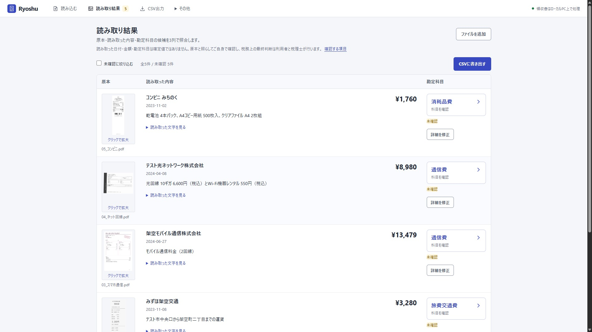

動作要件
Windows 11 64bit、JavaScriptが使えるブラウザー、Ollamaが必要です。専用GPUは不要で、最低RAMは未測定です。スマホ・LAN共有は対象外です。
確認済み環境と要件 ↗Ryoshu · 領収書の読み取りと支出帳簿
読み取りと勘定科目の候補作りはローカルPC上。
画像や内容を外部AIへ送らず、帳簿とCSVを作ります。
個人事業主・フリーランス向け / Windows 11 64bit / 専用GPU不要
初回準備では実行環境・依存・OCRモデル・約2.5GBのQwenモデルを取得するため、ネット接続が必要です。

32 SECOND INTRODUCTION
16:9・1920×1080 / 32秒・30fps・音声付き。新しい紹介動画は、実際の操作を録画した映像に同じ表示文章を組み合わせて制作し、720×1280の縦版も用意します。リンク先のCanvasは別の図解ソースです。
日付・金額・勘定科目は確定値ではありません。科目名からカテゴリーと科目を選び直し、金額・日付・用途などは「詳細を修正」で編集できます。
処理中のファイル・読み取り／科目候補の段階・完了と待ち件数を表示します。「取り込みを一時停止」で止まるのは未送信の原本の転送だけで、保存済みの領収書は処理を続けます。v1.3.2の画面と操作・導入の検証 ↗
領収書には13カテゴリー・69科目から選べます。初期マスターは74科目で、支払元・事業主等の5科目は仕訳の相手科目に使います。独自科目も追加できます。
読み取り結果と科目は候補です。原本と照らして利用者が確認し、税務上の最終判断は利用者と税理士が行います。「確認済み」は利用者の操作状態で、税理士の承認ではありません。確認後に明細を変えると未確認へ戻ります。
科目変更の実画面（2026-10-27・日本時間） ↗ / 科目一覧・用途・確認事項 ↗
架空5件を処理した画面で科目変更を開き、カテゴリーと科目の選択欄を表示しています。
金額・円額未確定97/97（返金3件除外）、日付99/100、暫定科目44/48、科目または保留条件86/100。金額は非負の円額95件と外貨で円額未確定の2件を評価し、暫定科目は提案を期待した48件が対象です。
暫定科目はv1.2の47/48から44/48、科目/保留条件は89/100から86/100になりました。新たな不一致のV032・V067・V093は、両版とも候補が外注工賃です。旧版では外注費をその別名として照合しましたが、今回は別々の正式科目に分離したため、不一致を保持しています。他の一致判定の状態は同じです。V050の賃借料→リース料は、どちらの版も許容候補と一致しました。元の期待値は変更せず、説明による加点もしていません。
税額の別評価63件：印字税額51/52、空欄11/11。数値を期待した空欄1件、誤った数値0件。評価対象外の返金3件に残った税額候補は登録停止のままで、成功件数へ加えていません。 税額評価は返金3件と外貨2件を実行前から除外しています。 V013は553円が印字されていますが、税額ラベルを特定できず空欄でした。 事前期待値・対象外・個別差異は検証記録を確認してください。
改善にも使った同じ架空100件の回帰検証であり、未知の実物領収書での正答率ではありません。AIが作る摘要も含め、原本との照合が必要です。
Python256、JavaScript5、通常画面28・保護画面10・UX8・科目操作8項目、CSV4形式の検査。新100件の推論とは別に記録しています。
SAVED FICTIONAL EXAMPLES
過去の検証から4件を抜き出した保存済みデータです。この紹介ページではOCR・AIを実行せず、帳簿にも登録しません。
保存済みデータを読み込んでいます。
OPEN EVIDENCE · v1.0.0の履歴
公開版v1.0.0の配布ZIPを固定し、100枚すべてをOCR・ローカルAIの勘定科目判定まで新規実行した記録です。保存済みOCR・既存候補は再利用せず、期待値・修正前後・残った誤り・手動補正を公開しています。
| 公開版v1.0.0の100枚回帰検査 | 一致数 / 評価数 |
|---|---|
| 金額・円額未確定の扱い | 97 / 97 |
| 日付 | 99 / 100 |
| 店名 | 86 / 100 |
| 暫定科目 | 47 / 48 |
金額の分母から返金3件を除外。暫定科目は科目候補を評価する48件が対象です。
v0.4の操作検査には保存済みの架空4例を使い、v1.0.0では130件のPython検査と28項目の画面操作を確認しました。画面検査のOCR・AI値は保存済み結果の再現です。公開前の100件検査と最後の3件の追加検査は、それぞれの履歴として保持しています。
同じ100件を修正にも使った回帰検査です。未知の実物領収書の正答率を示すものではありません。元のモデル候補と、確認欄の手動補正は分けて記録しています。
v1.3.4 Windowsインストーラー ↓ / ZIP・リリース一覧 ↗ / 確認方針と提供範囲 ↗
Windows 11 64bit、JavaScriptが使えるブラウザー、Ollamaが必要です。専用GPUは不要で、最低RAMは未測定です。スマホ・LAN共有は対象外です。
確認済み環境と要件 ↗Ollamaを公式サイトから導入します。外部AIのアカウント・APIキーと管理者権限は不要です。初回準備では実行環境・依存・OCRモデル・約2.5GBのQwenモデルを取得するため、ネット接続が必要です。
導入手順・署名なしEXEの確認方法 ↗支出の記録と確認が対象です。売上・口座照合、減価償却、決算・申告書、返金・外貨の仕訳には対応しません。汎用CSV、freee振替伝票、MFクラウド仕訳帳、弥生デスクトップ25項目形式を書き出せますが、各会計サービスの実アカウントへの取り込みは未検証です。
アプリのコードはMITで、Indra OCRの重み・Qwen・依存ライブラリは各条件に従います。帳簿DB・保存済み原本・プレビュー・暗号化バックアップは暗号化しますが、書き出したCSVと原本ファイルは暗号化されない通常ファイルです。
モデルと依存元の条件 ↗v1.3は科目カテゴリーを保存するためDBをスキーマ3へ更新します。更新前に暗号化バックアップを保存してください。更新前の暗号化スナップショットを保存し、既存明細・仕訳・独自科目を保持します。更新したDBは旧アプリで開けません。旧版へ戻す場合は、更新前のバックアップを別の保存先へ復元してください。